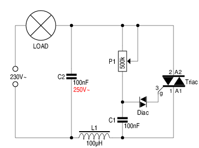

De meest-eenvoudige lichtdimmer bevat maar 4 onderdelen: een Triac1, een Diac, een condensator en een potentiometer.
De werking is snel uitgelegd: na elke nuldoorgang wordt C1
opgeladen via P1. Hoe kleiner de waarde waarop P1 staat
ingesteld, hoe sneller dat opladen gebeurt.
Zodra de spanning over C1 30V bereikt, wordt de
doorslagspanning van de Diac overschreden2.
Deze zal nu C1 snel ontladen, en die lading vloeit in de gate
van de Triac. Hierdoor gaat de Triac op zijn beurt in geleiding,
en dat blijft hij doen tot de volgende nuldoorgang.
Hoe groter de ingestelde weerstand van P1, hoe langer het duurt voor de spanning over P1 30V bereikt, en hoe korter de tijd tussen het ontsteekpunt en de volgende nuldoorgang, en hoe minder licht de lamp uitstraalt.
 Het eenvoudig schema hierboven zal werken, maar het is beslist geen aanrader.
De Triac schakelt namelijk heel snel in. De stroom door de
belasting gaat daardoor van nul naar maximum op heel korte tijd.
En dat herhaalt zich 100 maal per seconde!
Het gevolg zijn stoorsignalen die door de bedrading, die als
antenne fungeert, de ether ingezonden worden.
Daaraan valt wat te doen door een condensator (C2) en een kleine spoel (L1) aan de schakeling toe te voegen, zoals rechts te zien is. Merk op, dat de condensator geschikt moet zijn voor een wisselspanning van 250V of ―nog beter― 275V. Condensators die gemarkeerd zijn voor een gelijkspanning van 400V zijn ongeschikt.
Wat opvalt, is het feit dat L1 in serie met A1 is geplaatst. Het lijkt logischer, L1 tussen lamp en A2 op te nemen, maar dat is geen goed idee. A2 is immers verbonden met het koelplaatje van de Triac. Dit vormt een paracitaire capaciteit met de aarde, zeker als het op een koelprofiel geschroefd is. En die paracitaire capaciteit zal de werking van het LC-filter nadelig beïnvloeden.
De opgegeven waarden zijn geschikt voor belastingen tussen 150W
en 1000W.
Bij belastingen, kleiner dan 150W, kan het ontstoorfilter
oscillaties veroorzaken, die tot gevolg hebben dat de Triac
terug spert.
In het schema links wordt het ontstoorfilter
gedempt door de aanwezigheid van R1.
Wanneer de belasting een inductief karakter heeft ―ik denk hierbij aan een draadgewonde trafo voor halogeenverlichting― gelden er andere regels. Het heeft dan weinig zin, om een LC-filter te plaatsen - het inductief karakter van de belasting zal sowieso beletten dat de stroom snel van nul naar maximum gaat.
Hier doen zich twee andere problemen voor:
Het feit dat spanning en stroom niet in fase zijn, brengt de
Triac in de war. Immers, zodra de volgende nuldoorgang bereikt
is, wil de triac sperren. Op dat ogenblik vloeit er nog steeds
stroom - stroom die nergens heen kan! Dat veroorzaakt een plotse
spanningsstijging, die er kan voor zorgen dat de triac spontaan
ontsteekt - het zogenaamde rate-effect.
Daarnaast kan het vertraagd opkomen van de stroom bij het
ontsteken hinderlijk zijn. De Diac levert een korte maar
krachtige stroompuls op de gate van de Triac. Als de minimum
houdstroom nog niet bereikt is op het ogenblik dat die puls
wegvalt, zal de triac terug sperren.
Gelukkig kunnen beide problemen opgelost worden door een
snubber-netwerk, bestaande uit R1 en C2.
Enerzijds biedt dit netwerk een uitweg aan de stroom, wanneer de
triac bij een nuldoorgang spert. En anderzijds zal C2 zich bij
het ontsteken ontladen over R1, en alzo kortstondig voor de
nodige houdstroom zorgen tot de belasting het overneemt.
Ook hier moet C2 minstens een 250V~ type zijn.
R2 mag een gewone 1/4W weerstand zijn. C2 laat hoogstens 7.2mA
door. Dat betekent dat er over R2 maar 0.72V komt te staan, en
dat hij in dat geval maar 5mW verstookt.
Er is nóg wat mis met de schakelingen hierboven. Wanneer we P1
instellen op zijn maximum weerstand, blijft de lamp gedoofd. De
stroom die P1 doorlaat volstaat niet om C1 op te laden tot de
benodigde ontsteekspanning van 30V.
Dat betekent niet, dat C1 geen lading krijgt. Het betekent
wél, dat C1 niet ontladen wordt zoals dat zou gebeuren op het
ogenblik dat de Diac ontsteekt.
Het gevolg is, dat de spanning over C1 gaat naijlen op de
netspanning. Verdraaien we nu P1, dan wordt de laadstroom
groter. De lamp blijft echter gedoofd - het naijlen zorgt er
voor dat C1 eerst moet ontladen worden alvorens het laden een
aanvang kan nemen.
Blijven we P1 verdraaien, dan zal de laadstroom op zeker moment
wel groot genoeg zijn om C1 tot de nodige 30V op te laden.
De Diac ontsteekt, waardoor C1 ontladen wordt.
Vanaf dat ogenblik ijlt de spanning over C1 niet meer na ten
opzichte van de netspanning. Het gevolg is, dat de lamp plots
van 0% naar bijna 50% springt.
Vanaf dit punt kunnen we P1 terugdraaien, zodat de lamp zachter
gaat branden, maar fraai is het allemaal niet.
We hebben “iets” nodig, dat C1 bij elke nuldoorgang ontlaadt,
ook als de Diac niet ontsteekt. En dat is precies wat R1, R2 en
D1 ... D4 in de schemas hiernaast doen.
Stel, dat de netspanning op A positief is tov. B, en dat de
Triac niet ontstoken wordt.
Op het knooppunt R1/D1/D3 staat een spanning van +0.7V. C1 kan
langs die weg niet opgeladen worden - over D3 zou immers óók
0.7V vallen, waardoor er geen spanning overblijft. D4 staat in
sperrichting - langs deze weg vloeit er evenmin stroom.
C1 wordt wel opgeladen via P1, maar als deze ingesteld staat op
500k is de laadstroom te klein om C1 tot 30V op te laden.
Wanneer nu de volgende nuldoorgang bereikt wordt, zal er over C1
nog steeds een positieve spanning staan.
Na de volgende nuldoorgang wordt A negatief tov. B.
Nu komt er op het knooppunt R2/D2/D4 een spanning van -0.7V te
staan. Dat geeft C1 de gelegenheid zich te ontladen
over D4 en R2.
R1, D1 en D3 hebben tijdens deze fase geen invloed, omdat het nu
D3 is die in sperrichting staat voor de aangelegde spanning.
Dit mechanisme maakt het mogelijk de lamp te regelen van 0% naar de gewenste lichtsterkte zonder ongewenste sprongen.
Wellicht ten overvloede: de rechtse schakeling is geschikt voor ohmse belastingen, en de linkse voor inductieve belastingen.
Het kan gebeuren, dat een gedimde lamp meerdere malen per dag
kortstondig begint te flikkeren. De kans is groot, dat
CAB3-signalen hiervan de
oorzaak zijn. Dat zijn toonfrequent-signalen die de netbeheerder
superponeert op de 50Hz van het lichtnet.
In de regel is de
frequentie daarvan net geen veelvoud van 50Hz. In Antwerpen en
ogeving is dat 1347Hz. Het gevolg hiervan is, dat het tijdstip
van de nuldoorgang een beetje heen-en-weer schommelt, en dat is
merkbaar aan de lichtsterkte van de lamp.
In principe valt daar wat aan te verhelpen. Er bestaan immers
filters die bedoeld zijn als voorzet voor condensatorbatterijen.
In de praktijk is zo'n filter veel te duur om de aanschaf zelfs maar te
overwegen.
“Leer er mee leven” zou ik zeggen...
De taak van C1, P1 en de Diac in voorgaande schemas kan overgenomen worden door een μC. Over de werkwijze zal ik niet dieper ingaan, maar ik wil wel een tweetal kanttekeningen maken.
Je zou een Triac kunnen aansturen zoals op het plaatje rechts.
Met een TIC206, een TIC216, of een vergelijkbare Triac zal dat naar behoren
werken - die zijn tevreden met een gatestroom van 10mA.
Maar bij een TIC226 kan het al fout lopen. Dit, omdat de vierde
quadrant doorgaans twee maal zoveel stroom vergt als de overige
drie.
Een Triac kan immers op vier manieren gestuurd worden. Hier de vier quadranten, met de benodigde gate-stroom voor een TIC226:
Merk op, dat de Triac in het schema “ondersteboven” getekend staat!
Als we een lamp sturen, en de Triac krijgt onvoldoende gate-stroom, kan het zijn dat hij de belastingsstroom maar in één richting doorlaat. Dat is flink vervelend, want de lamp zal dan merkbaar flikkeren.
Als de belasting een draadgewonden halogeen-trafo is, wordt het
nog veel erger. Die krijgt immers geen wisselstroom meer, maar
een pulserende gelijkstroom.
En die stroom kan behoorlijk oplopen, want het inductieve
karakter van de trafo valt bijna geheel weg. Met wat geluk
grijpt er ergens een zekering in. Gebeurt dat niet, dan kan je
een doorgebrande primaire wikkeling verwachten - als het daarbij
blijft...
Het gebruik van een optotriac zoals de MOC3023 is dan
ook een aanrader. Vermits deze tevreden is met 5mA aan zijn
ingang, kan hij rechtstreeks door een μC gestuurd worden.
Daarnaast wordt de gate van de Triac steeds met dezelfde
polariteit gestuurd als de belasting. Dat zijn quadranten 1 en 3
- de zuinigste van het stel.